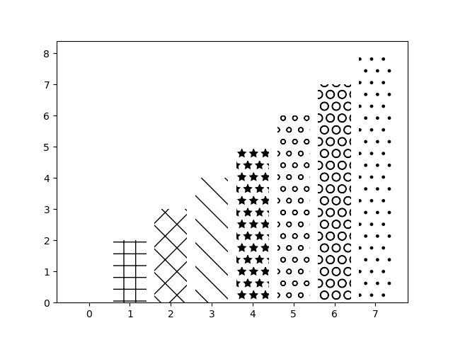

# 竖着画图
import matplotlib.pyplot as plt | |
import numpy as np | |
mean_values = [1, 2, 3] | |
variance = [0.2, 0.4, 0.5] | |
bar_label = ["bar1", "bar2", "bar3"] | |
# range (3) 等价于 range (0, 3), 是 [0, 1, 2] 没有 3. | |
x_pos = list(range(len(bar_label))) | |
# plt.bar: 表示竖着画图. | |
# yerr: 梯形图上方的误差棒 | |
# alpha: 条形图透明程度 | |
# color: 条形图颜色 | |
plt.bar(x_pos, mean_values, yerr=variance, color='g', alpha=0.3) | |
# zip (): 将对象中对应的元素打包成一个个元组，然后返回由这些元组组成的列表 | |
# list (zip (mean_values, variance)) 返回： [(1, 0.2), (2, 0.4), (3, 0.5)] | |
# max (zip (mean_values, variance)) 返回: (3, 0.5) | |
max_y = max(zip(mean_values, variance)) | |
plt.ylim([0, (max_y[0] + max_y[1]) * 1.2]) | |
plt.ylabel("variable y") | |
plt.xticks(x_pos, bar_label) | |
plt.show() |
# 横着画图
import matplotlib.pyplot as plt | |
import numpy as np | |
# 生成 [1 2 3] 数组 | |
x1 = np.array([1, 2, 3]) | |
x2 = np.array([2, 2, 3]) | |
bar_labels = ["bar1", "bar2", "bar3"] | |
fig = plt.figure(figsize=(8, 6)) | |
# 返回 [0 1 2] 数组 | |
y_pos = np.arange(len(x1)) | |
# 返回 [0, 1, 2] 数组 | |
y_pos = [x for x in y_pos] | |
# 横着画图 | |
plt.barh(y_pos, x1, color='y', alpha=0.5) | |
plt.barh(y_pos, -x2, color='b', alpha=0.5) | |
plt.ylim(-1, len(x1) + 1) | |
plt.xlim(-max(x2) - 1, max(x1) + 1) | |
plt.show() |
# 斜向上图
import matplotlib.pyplot as plt | |
import numpy as np | |
x = np.linspace(0, 10, 200) | |
y1 = x * 2 + 1 | |
y2 = x * 3 + 1.2 | |
y_mean = x * 0.5 * np.cos(2 * x) + 2.5 * x + 1.1 | |
fig, ax = plt.subplots() | |
ax.fill_between(x, y1, y2, color='red') | |
ax.plot(x, y_mean, color='black') | |
plt.show() |
# 误差棒
import matplotlib.pyplot as plt | |
import numpy as np | |
mean_values = [1, 2, 3] | |
variance = [0.2, 0.4, 0.5] | |
bar_label = ['bar1', 'bar2', 'bar3'] | |
x_pos = list(range(len(bar_label))) | |
# yerr: 误差范围 | |
# alpha: 透明程度 | |
plt.bar(x_pos, mean_values, yerr=variance, alpha=0.3) | |
max_y = max(zip(mean_values, variance)) | |
plt.ylim([0, (max_y[0] + max_y[1]) * 1.2]) | |
plt.ylabel('variable y') | |
plt.xticks(x_pos, bar_label) | |
plt.show() |
# 分组条形图
import matplotlib.pyplot as plt | |
import numpy as np | |
green_data = [1, 2, 3] | |
blue_data = [6, 5, 4] | |
red_data = [9, 7, 8] | |
labels = ['group 1', 'group 2', 'group 3'] | |
pos = list(range(len(green_data))) | |
width = 0.2 | |
fig, ax = plt.subplots(figsize=(8, 6)) | |
bar0 = plt.bar(pos, green_data, width, alpha=0.5, color='g', label=labels[0]) | |
# 画最小值所在位置的虚线 | |
plt.hlines(min(green_data), -1, len(labels) + width * 2, linestyles='dashed') | |
plt.bar([p + width for p in pos], | |
blue_data, | |
width, | |
alpha=0.5, | |
color='b', | |
label=labels[1]) | |
plt.hlines(min(blue_data), -1, len(labels) + width * 2, linestyles='dashed') | |
plt.bar([p + width * 2 for p in pos], | |
red_data, | |
width, | |
alpha=0.5, | |
color='r', | |
label=labels[2]) | |
plt.hlines(min(red_data), -1, len(labels) + width * 2, linestyles='dashed') | |
plt.title("Test Multi Group") | |
plt.xlabel("Color Group") | |
plt.ylabel("Color Data") | |
plt.savefig('05.png') | |
plt.show() |
# color map

import numpy as np | |
import matplotlib.pyplot as plt | |
import matplotlib.colors as col | |
import matplotlib.cm as cm | |
mean_values = range(10, 18) | |
x_pos = range(len(mean_values)) | |
cmap1 = cm.ScalarMappable( | |
col.Normalize(min(mean_values), max(mean_values), cm.hot)) | |
cmap2 = cm.ScalarMappable(col.Normalize(0, 20, cm.hot)) | |
plt.subplot(121) | |
plt.bar(x_pos, mean_values, color=cmap1.to_rgba(mean_values)) | |
plt.subplot(122) | |
plt.bar(x_pos, mean_values, color=cmap2.to_rgba(mean_values)) | |
plt.savefig("matplotlib/06.png") | |
plt.show() |
# 条形图填充

import matplotlib.pyplot as plt | |
patterns = ('_', '+', 'x', '\\', '*', 'o', 'O', '.') | |
fig = plt.gca() | |
mean_value = range(1, len(patterns) + 1) | |
x_pos = list(range(len(mean_value))) | |
bars = plt.bar(x_pos, mean_value, color='white') | |
for bar, pattern in zip(bars, patterns): | |
bar.set_hatch(pattern) | |
plt.savefig("matplotlib/07.png") | |
plt.show() |